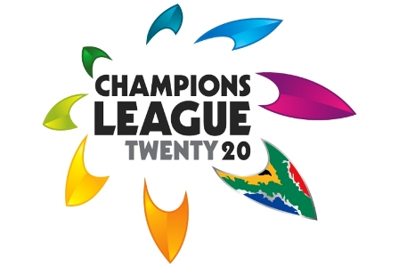

Champions League Twenty20:

It is also shortly known as CLT20. This is the biggest tournament in the domestic level cricket. Every year the top played cricketing nations play in this tournament. It is owned by 3 countries BCCI, Cricket Australia and Cricket South Africa. All the domestic teams which involve young and experienced players fight with the other team with the same formatted team. It is a very good platform for all those young domestic players who can prove themselves and walk into the National team like a boss! Once they give fine performance here. In simple worlds it can be called as the next level or next step of the IPL. It is the newly emerged tournament which will surely need some time to establish itself.
| Year | Winner | Runner | Host |
| 2013 | Mumbai Indians | Rajasthan Royals | India |
| 2012 | Sydney Sixers | Highveld Lions | South Africa |
| 2011 | Mumbai Indians | Royal Challengers Bangalore | India |
| 2010 | Chennai Super Kings | Warriors | South Africa |
| 2009 | New South Wales Blues | Trinidad and Tobago | India |